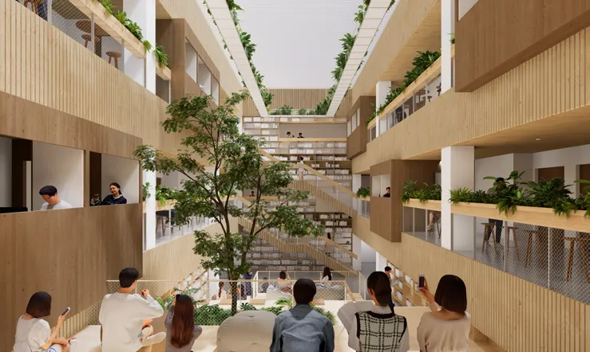

Books Above
Bustles
Can a library reconnect a city?
Between Chang’an Avenue and the hutongs, a suspended civic building brings reading, learning, and work together above a permeable public ground. A network of gardens, bridges, and shared spaces connects the building’s environmental systems to its social life.
Read the building through its systems.
Select a reading of the section. Highlighted zones locate the systems discussed below; the original drawing remains available at full size.
A vertical public realm
Gardens, bridges, reading spaces, and an open ground floor connect the building’s compartments into a continuous civic interior.
A civic room above the city.
Suspended volumes open the ground to pedestrian movement and public landscape. The mirrored envelope registers the changing city around it.
Testing the spatial proposition.
Physical models study the relationship between suspended volumes, structure, light, and the permeable ground.
Project credits
Collaborative studio · Hao Chang & Mengzhe Lee
Hao’s role: lead concept, diagrams, modeling, and sections
Instructor: Martijn de Geus · April–June 2024
Learning Beyond the Classroom
